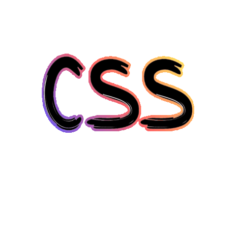

Le CSS: style;
.définition {
CSS est l’acronyme de « Cascading Style Sheets » ce qui signifie « feuille de style en cascade ». Le CSS correspond à un langage informatique permettant de mettre en forme des pages web (HTML ou XML). Ce langage est donc composé des fameuses « feuilles de style en cascade » également appelées fichiers CSS (.css) et contient des éléments de codage.
}

L'histoire du CSS;
.historique {
en 1994-1995, que le tout nouveau Netscape Navigator introduit les premiers éléments HTML de présentation à l'initiative de Marc Andreessen, tandis qu'apparaissent concurremment les premières propositions de styles externes:
- - le « stylesheet proposal » de Pei Wei (créateur de Viola).
- - les « Stylesheets for HTML» de Robert Raisch (O'Reilly).
- - les « Cascading HTML Style Sheets » (CHSS) d'Håkon Wium Lie.
une troisième voie de développement est également ouverte à la
même époque:
le langage de
transformation
DSSSL des documents SGML, élaboré par
James Clark, suggère la
possibilité d'un langage de styles
qui ne
soit
pas seulement descriptif, et se rapproche d'un véritable langage
de programmation. Cette voie est
suivie
par Netscape, qui propose en 1996 au W3C les « JavaScript-Based Style Sheets
»(JSSS), implémentées par
Netscape Navigator 4 en 1997.
les origines des CSS sont donc liées à trois possibilités
majeures :
- - HTML est-il un langage de structuration ou un langage mixte de mise en forme et de structuration ?
- - les choix de présentation de l'auteur doivent-ils avoir la primauté sur ceux de l'utilisateur ?
- - la réponse aux besoins est-elle un langage de description de la mise en forme ou un langage de transformation ?
}
A quoi sert le
?
.explication {
le CSS définit seulement la
structure et la présentation d'un
contenu
de site web et n'a rien a voir
avec le design.
Une seule feuille CSS peut controler la police, le positionnement,
la couleur, et le style des
informations de tout un site.
voici 6 exemples de l'utilisation des feuilles CSS:
- - les pages web se chargent plus rapidement et utilisent moins de bande passante.
- - il est compatible avec tous les navigateurs.
- - peut etre utilisé pour créer des pages web faciles a imprimer.
- - permet à l'utilisateur de personnaliser une page web.
- - facilite le positionnement dans les moteurs de recherche.
- - le CSS facilite la portabilité du contenu.